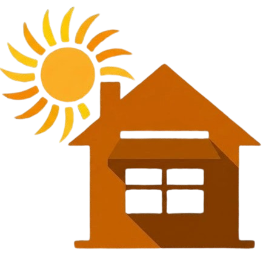

Loading 3D view...

Window Overhang and Awning Design Guide
Adjust the sliders below to change your window dimensions, awning size, location, and wall orientation. The 3D view updates in real time so you can see how shading changes with time of day and season. Use the quick-jump buttons to compare summer vs. winter performance, or hit Animate Day to watch the sun travel across the sky.
This tool simulates how a horizontal awning or overhang above a window blocks direct sunlight at different times of day and year. It uses your geographic location to compute the exact position of the sun in the sky, then calculates the shadow cast by the awning onto the window and into the room using standard building science geometry.
The 3D visualization uses a celestial hemisphere — a model from astronomy that shows the sky as a dome over your building. The sun's daily path is drawn as an arc across this dome, and you can watch the sun travel along it as you change the time of day. Reference arcs for the summer and winter solstices show how the sun's path shifts throughout the year. Your room sits at the center of the dome on a compass rose, and you can rotate it to face any direction to see how orientation affects shading.
The goal is to help you choose an awning size that blocks unwanted solar heat gain in summer (when the sun is high) while still allowing beneficial sunlight in winter (when the sun is low). The tool provides both a visual 3D simulation and quantitative metrics including the percentage of your window that is shaded, how deep sunlight penetrates into your room, and an annual performance summary.
All calculations run entirely in your browser. No data is sent to any server.
The sun's position in the sky is defined by two angles:
These angles depend on your latitude, longitude, date, and time of day. They are determined by well-known astronomical formulas based on Earth's axial tilt (23.45°) and orbital position.
This tool uses the SunCalc.js library by Vladimir Agafonkin, which implements the algorithms from Jean Meeus's Astronomical Algorithms — the standard reference used by observatories and solar energy professionals worldwide.
The angular difference between the sun's compass azimuth and the direction the wall faces. When the HSA exceeds ±90°, the sun is behind the wall and no direct sunlight hits the window.
This is computed for every time step and determines whether direct sun can reach the window at all.
The apparent altitude of the sun when viewed in a vertical plane perpendicular to the wall surface. This is the critical angle for horizontal overhangs — it determines how far down the shadow extends.
VSA is always ≥ altitude when the sun is not perpendicular to the wall, because the sun's rays travel a longer apparent path across the overhang.
The shadow starts at the top of the window and extends downward. If the shadow depth exceeds the window height, the entire window is shaded.
Measured from the window wall inward. Lower sun angles produce deeper penetration.
When the sun is not perpendicular to the wall, the shadow shifts sideways. This is especially important for east- and west-facing windows.
The percentage of window area in shadow, combining vertical and lateral components:
The Optimize Unlocked button recommends optimal values for any awning dimensions that are not locked (depth, gap, and/or width extension). You can lock any parameter to its current slider value and the algorithm will optimize the remaining parameters around that constraint. This supports two common scenarios:
The methodology is adapted from SusDesign's overhang recommendations, which are derived from the NREL Solar Radiation Data Manual lookup tables, combined with our direct solar geometry calculations.
Rather than designing for summer solstice only, the algorithm picks a design start date — the date when full shading should begin — based on your latitude as a climate proxy:
This matches the SusDesign/NREL approach: warmer climates need shading earlier in the year, requiring deeper overhangs; cooler climates maximize winter solar gain.
For equator-facing and near-equator walls, a non-zero gap is calculated so that the overhang’s shadow at winter solstice noon exactly clears the window top (0% winter shade). This allows maximum passive solar heating in winter while the deeper overhang still blocks summer sun:
For east/west walls, the gap is set to 0 (flush mount) because low-angle winter sun on these walls is minimal and the gap optimization provides little benefit. For retrofit installations, a practical minimum gap of 0.25 ft (3 in) is noted for mounting clearance.
Depth and gap are solved simultaneously. Full window shading at noon on the design start date requires:
Combined with the gap equation, this gives a single closed-form solution:
For east/west-facing walls, the algorithm instead scans daylight hours (6 AM–6 PM) on the summer solstice to find the hour when the sun is most perpendicular to the wall (minimum |HSA|), using flush-mount geometry:
In all cases, depth is checked against the winter limit (max depth before >30% winter shade). If exceeded, a retractable awning is recommended.
At solar noon on an equator-facing wall, the Horizontal Shadow Angle (HSA) is near zero and the shadow falls straight down — no lateral extension is needed. But in morning and afternoon, the sun’s azimuth shifts the shadow sideways. The width extension ensures the awning shadow covers the full window width at 10 AM and 2 PM on the summer solstice:
The effective HSA is capped at 45° for the width calculation. Beyond 45° the sun is nearly parallel to the wall and a horizontal awning becomes ineffective — vertical fins or retractable solutions would be needed instead.
The geometric methodology (depth = H / tan(VSA)) is the same for all non-north orientations, consistent with ASHRAE Standard 90.1 which treats all non-north orientations identically in its Projection Factor SHGC multiplier tables (Table 5.5.4.4.1). However, the practical effectiveness of horizontal overhangs varies significantly by orientation:
This approach follows the NREL/ASHRAE methodology of computing the same geometric shading for all orientations, while providing orientation-specific guidance on supplementary strategies, consistent with Building America (PNNL) best practices.
The algorithm checks whether the optimized depth fits within the winter shade limit — the maximum depth before the awning blocks more than 30% of the window in winter. If it does, a single fixed awning can achieve good summer shading while preserving winter passive solar gain. If the depth exceeds the limit, the display flags this as a trade-off — a retractable or seasonal solution may be needed.
The fraction of solar energy that passes through a window as heat (0 = blocks everything, 1 = passes everything). Common values: single clear glass ≈ 0.86, double clear ≈ 0.76, double low-e ≈ 0.42, triple low-e ≈ 0.27.
A simplified metric from ASHRAE Standard 90.1 used in building energy codes.
PF = 0 means no overhang; PF ≈ 0.5 is typical for effective summer shading; PF = 1.0 means the overhang extends as far as the full window-to-sill distance.
Simplified estimate assuming ~1000 W/m² clear-sky direct normal irradiance, modulated by angle of incidence and shading fraction. Useful for relative comparisons, not a substitute for a full energy simulation.
Open-source JavaScript library implementing solar position algorithms from Meeus's Astronomical Algorithms. Used for all sun position calculations in this tool.
The standard reference for solar position formulas used by SunCalc.js.
Industry-standard reference for window solar heat gain calculations, shading geometry (HSA, VSA), and the Projection Factor method used in energy codes.
Proposes the adjusted SHGC methodology for quantifying how awnings affect window solar heat gain.
The "Blue Book" — provides shading geometry data for 239 U.S. stations using dimensionless overhang ratios. The same geometric methodology is applied to all vertical window orientations. Notes that "overhangs are not particularly effective" for east- and west-facing windows, recommending supplementary vertical louvers.
Defines the Projection Factor method (Table 5.5.4.4.1) for SHGC credits from overhangs. Treats all non-north orientations identically in PF multiplier tables — the basis for this tool's orientation-independent geometric calculation.
Best practices for window shading by orientation. Notes that deep horizontal shading over E/W windows blocks sun in both summer and winter, and recommends supplementing with operable shading strategies.
Comprehensive overview of shading strategies for buildings, including fixed overhangs and orientation-specific design recommendations.
Detailed reference on horizontal and vertical shadow angle geometry, shading device design for various climates.
Practical guide to sunshade sizing by orientation, with worked examples using solar altitude and azimuth angles.
Textbook-style derivation of overhang shading geometry including shadow projection formulas.
Explains the ASHRAE 90.1 Projection Factor definition and its use in building energy code compliance.
Overhang depth and gap lookup tables by latitude and climate type (Warm/Mixed/Cool), derived from the NREL Solar Radiation Data Manual. The Optimize Awning algorithm in this tool is calibrated against these recommendations.
Web-based overhang shading calculator. An inspiration for the annual analysis feature in this tool.
Web-based tool for calculating hourly and annual window shading by horizontal overhangs.
The celestial hemisphere visualization is based on the observer-centric celestial sphere model used in astronomy and solar energy analysis.
Documentation for the 3D rendering engine used for the room visualization.
This tool is open source under the MIT License.
View on GitHub — Contributions and issue reports welcome.
Built with: